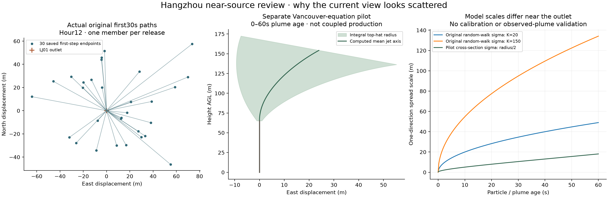

ACTUAL SAVED DATA · MODEL SCOPE REVIEW
Why does the near-source plume look scattered?
Measured evidence
| Quantity | Actual result |
|---|---|
| Original particle timestep | 30s |
| Bulk horizontal diffusivity | 20–150m²/s |
| One-direction random displacement standard deviation per step | 34.64–94.87 m |
| Observed first-step horizontal displacement, including mean wind | Median 102.15 m · p95 276.81 m · 41,839 unreflected births |
| Documented outlet diameters | 0.6–2m |
| Original near-display sampling | 1 of8192 members per event; final24h used8 of8192 |
Standardizing the actual horizontal random increments by their original coefficient gives standard deviations1.003 and1.002 and cross-correlation0.0055. This does not show an extra unit multiplier in the inspected first-step arithmetic. It does not establish that the chosen bulk diffusivity is physically suitable within metres of a stack.
Each selected30-second accepted path is represented by straight pieces. An hourly accumulation of relatively few paths can therefore form a visible fan. The diagnostic expansion factor multiplies sample weights and illustrative opacity; it does not multiply trajectory lengths or physical emissions. Increasing the number of displayed model paths can reduce the sparse-ray artifact but does not repair the underlying bulk diffusion approximation.

What the separate pilot establishes
The unchanged Vancouver finite-density integral-jet equations were evaluated for four Hangzhou design outlets at one frozen forecast hour, for 60 seconds of plume age. They evolve carrier mass flux, momentum, heat and entrainment rather than using only an instantaneous positional jump. The four calculations took 1.02 seconds. Initial radius and volume flow match the declared source operands. The source flow basis remains uncertain; these are conditional velocities, not measured stack exit speeds.
For LJ01 the computed integral radius at 30 seconds is21.17m; its top-hat cross-sectional standard deviation is radius/2. This is a different model statistic, not an observed truth or a calibrated replacement for the regional diffusion. The pilot is not coupled to the360-hour particle mass, terrain collisions, dry/wet deposition or surface reservoirs. No regional particle steps were rerun and no pilot plume was added to the published concentration.
Implications for correction
A presentation-only opacity change cannot establish physical correctness. Shorter output intervals or smaller steps alone also do not reduce the accumulated diffusion prescribed by the same stochastic equation. A defensible close-source correction needs a separately recorded model with appropriate velocity correlation, exit momentum, buoyant rise and entrainment, consistent source-mass handoff, and new checks. The original16versions and their failures remain preserved.
The native FLEXPART formulation used in the Vancouver workflow treats turbulent velocity through Langevin equations; its near-point-source applicability depends on the turbulence scheme and representative resolved winds. That differs from the Hangzhou experiment’s simplified position random walk. Primary model description.